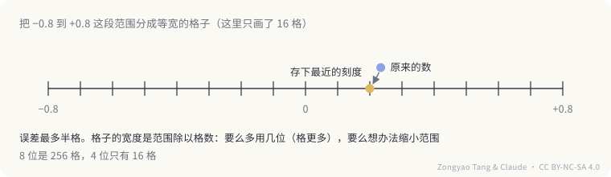
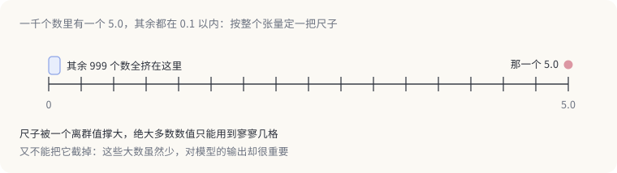

线索是：量化是用更少的位数表示每个数，先看它是怎么做的、误差从哪来 → 它在推理里为什么有效，省的到底是什么 → 权重好量化，激活值难量化，原因在几个特别大的数。读的时候记着 4.1 的结论：逐词生成时瓶颈是“把权重从显存读出来”。量化是对这个瓶颈最直接的回应。
第 9 部分 · 推理系统（选读）9.2 量化与低精度
这一单元回答用更少的位数表示数字，到底省了什么、丢了什么？
承接 4.1：逐词生成受显存带宽限制，量化是最直接的解药。
讲解
1量化，就是换一把刻度更粗的尺子
把一段浮点数的范围映射到 256 个（int8）或 16 个（int4）整数上：用缩放因子（scale）决定每一格代表多少，必要时用零点（zero point）平移。误差和每一格的宽度成正比。
基本做法。 有一组浮点数（比如一个权重矩阵），想用 8 位整数来存，也就是只有 256 个可能的取值。
- 找出这组数的范围，比如从 −0.8 到 +0.8。
- 把这个范围均匀地分成 255 格。每一格的宽度叫缩放因子（scale），这里约是 0.0063。
- 每个浮点数除以缩放因子，四舍五入到最近的整数，存下这个整数。
- 用的时候，整数乘以缩放因子，得到原数的近似值。
存下来的是一堆 8 位整数，外加一个缩放因子。

每个数被挪到离它最近的刻度上 误差从哪来。 四舍五入。每个数最多偏差半格。所以误差的大小和格子的宽度成正比，而格子的宽度 = 范围 ÷ 格数。两条路可以减小误差：
- 增加格数：多用几位。从 4 位（16 格）到 8 位（256 格），误差小 16 倍。但位数正是我们想省的。
- 缩小范围：这是量化技术真正下功夫的地方。
范围是被极端值撑大的。 假设一千个数里，九百九十九个在 −0.1 到 0.1 之间，只有一个是 5.0。按整体的范围来定，尺子要从 −5 量到 5，每一格宽 0.04。那九百九十九个数全都挤在中间的五六格里，几乎分辨不出彼此。一个极端值毁掉了其余所有数的精度。
分组：每组一把自己的尺子。 不对整个矩阵用同一个缩放因子，而是分成小组，每组按自己的范围定缩放因子：
- 按通道（矩阵的每一行或每一列各一个）。
- 按更小的组（每 64 或 128 个数一组）。
那个 5.0 只影响它所在的那一组，其他组的尺子都很细。代价是要多存一些缩放因子：每 128 个 4 位的数配一个 16 位的缩放因子，平均每个数多出约 0.125 位，很划算。
零点。 如果数的范围不对称（比如经过 ReLU 的激活值全是非负的），把尺子的中心放在 0 就浪费了一半的格子。再存一个偏移量（零点），让尺子正好覆盖实际的范围。权重通常大致对称，一般不需要。
更聪明的舍入。 最简单的量化对每个权重独立地四舍五入。但我们真正关心的不是每个权重的误差，而是这一层输出的误差。GPTQ、AWQ 这类方法拿少量真实的输入数据来校准：舍入一个权重时，考虑它对输出的影响，并调整其他权重来补偿。这让 4 位甚至 3 位的量化仍然保持不错的模型质量。它们不改变“尺子”的基本原理，改进的是“往哪边舍入”。
打个比方用一把只有 256 个刻度的尺子量东西：量程定得越大，每一格就越粗。
所以量化的关键是选好量程：别让个别极端值把量程撑大。per-channel、per-group（每 64 或 128 个数一组）给每组配一把自己的尺子，误差小得多。
- 量化让模型变小了。在推理里，“变小”带来的速度提升比直觉上更直接。
2推理里量化主要省的是带宽，不是算力
逐词生成受显存带宽限制（4.1）。权重从 16 位降到 4 位，要搬的字节数变成四分之一，kernel 在寄存器里边读边反量化，多出来的那点计算几乎不占时间。
回到 4.1 的估算。 单个请求 decode 的速度上限 ≈ 显存带宽 ÷ 模型权重的字节数。每生成一个 token，要把全部权重从显存读一遍。
把权重从 16 位量化到 4 位，字节数变成四分之一，这个上限就变成四倍。7B 的模型从 14 GB 降到约 3.5 GB，在 1 TB/s 的卡上，理论上限从每秒 70 个 token 升到 280 个。
反量化要不要花时间。 存的是 4 位整数，计算时还是要变回浮点数（乘以缩放因子）。这一步在 kernel 里完成：线程从显存读入打包好的整数，在寄存器里解包、乘缩放因子，紧接着做矩阵乘向量的运算。
多出来的这点运算是在寄存器里做的，不涉及显存。而 decode 是带宽受限的，运算单元本来就闲着（4.1）。所以这些额外的运算几乎不占时间。这是 4.2 讲过的模式：对带宽受限的运算，多算一点、少搬一些，是划算的。
对显存的好处。 权重占得少了，腾出来的显存可以给 KV cache，于是同样的卡能放下更多的并发请求（9.1）。对显存不大的设备（个人电脑、手机），量化常常是“能不能跑起来”的前提。
什么时候帮助不大。
- *大批量的服务。* 9.1 讲过，batch 大了之后瓶颈从带宽转向算力。这时每一步的时间主要是运算，读权重只占一小部分，把权重变小就没有多大的速度收益（显存的好处还在）。要在算力受限的区间提速，需要的是让矩阵乘法本身用更低的精度来算（下面）。
- *prefill。* 同理，prefill 是算力受限的。
两种不同的“低精度”。
只量化权重（如 W4A16） 权重和激活都量化（如 W8A8） 存储 权重 4 位 权重、激活都 8 位 计算 反量化成 16 位浮点再算 直接用 8 位整数或 8 位浮点做矩阵乘法 省的是 带宽、显存 带宽、显存，还有算力 最适合 单用户或小批量的 decode 大批量、算力受限的场景 难度 低 高（下一节） 第二种能让 Tensor Core 在同样的时间里做更多的乘加（4.5 讲过它支持 8 位的输入），所以对算力受限的场景也有效。但它要求激活值也量化，这比量化权重难得多。
判断方法还是那一条。 先问瓶颈在等什么。在等显存带宽：只量化权重就有效，而且简单。在等算力：要量化到计算本身。0.1 的四种“等”在这里又用了一次。
打个比方像把货物压缩打包：运输快了很多，拆包时多花一点力气。
所以只量化权重（W4A16）对单用户生成提速最明显；大批量、算力受限的场景，要靠 int8、fp8 的矩阵乘法本身更快才有收益。
出处CUDA for LLMs 第 9 章 收益来自少搬字节- 上一节的表里说“权重和激活都量化”难度高。难在激活值。
3激活值里有“巨人”，所以比权重难量化
大模型的激活值里，少数几个通道的数值比其他通道大几十倍。按整个张量选一个量程时，这几个离群值把尺子撑得很粗，其余绝大多数数值都量不准。
权重和激活值的三个区别。
- *权重是固定的，激活值每次都不同。* 权重训练完就不变，可以慢慢分析它的分布，离线挑一个最好的量化方式。激活值取决于输入，量化的参数必须对将来所有可能的输入都合适。
- *权重的分布比较规整，激活值有极端的离群值。* 权重大体上集中在零附近。而大模型的激活值里，少数几个固定的通道（隐藏维度里的某几个位置）的数值可以比其余的大几十上百倍。
- *误差的传播。* 激活值的量化误差会直接流进下一层，一层层累积。
离群值为什么致命。 这正是 9.2 第一节那个例子：一千个数里有一个 5.0，其余都在 0.1 以内。按整个张量定一把尺子，绝大多数数值只能用到寥寥几格。而且不能简单地把那几个大数截断：研究发现，它们虽然少，对模型的输出却很重要，截掉会明显损害质量。

一个离群值占掉了几乎整把尺子 对权重，分组量化解决了这个问题：离群值只影响它那一小组。对激活值，分组没有那么容易：
- 按 token 分组（每个位置一把尺子）：可行，而且有效，因为不同位置的数值范围不同。
- 按通道分组（每个隐藏维度一把尺子）：效果最好，因为离群值正是集中在特定的通道上。但它和高效的整数矩阵乘法不兼容：矩阵乘法要把一行里各个通道的数乘起来再相加，如果每个通道的缩放因子不同，就没法直接在整数上做这件事。
几种办法。
- *把难度转移给权重。* SmoothQuant 的思路：一层的运算是“激活 × 权重”。把激活的某个通道除以一个系数，同时把权重对应的那一列乘以同一个系数，乘积不变。选合适的系数，让激活里的离群通道被压小，权重相应地变大一些。权重本来就好量化，承受得起。于是两边都变得容易量化了。
- *把离群的部分单独处理。* 绝大多数数值用低精度，少数离群的通道或元素保留高精度，分开计算再合并。
- *量化时带着训练。* 在训练或微调的过程中就模拟量化的效果，让模型自己适应。效果最好，成本也最高。
实际中的选择。
- 个人设备上跑模型：只量化权重到 4 位左右。简单、稳定，正好对上单用户 decode 的带宽瓶颈。这是你下载到的各种“量化版模型”的主流做法。
- 大规模的服务：是否量化激活，取决于算力成本和质量要求之间的权衡。较新的 GPU 支持 8 位浮点（fp8），它比 8 位整数更能容忍数值范围的差异，让这件事容易了一些。
- KV cache 也是激活值。量化它能直接增加并发（9.1），同样要面对上面这些问题。
训练中的低精度是另一回事。 这一单元讲的是训练好之后的量化。训练时的 bf16 混合精度（1.5、2.6）位数多得多，又保留了 32 位的主副本，没有这些困难。用 8 位甚至更低的精度来训练，是仍在探索的方向。
打个比方全班身高都在一米五到一米九之间，突然来了一位三米的巨人：尺子量程一放大，其他人就都量不准了。
所以同时量化激活的方案（如 W8A8）都要专门处理离群值：按 token 或按通道量化、把离群通道单独用高精度、或把难度转移到权重上。只量化权重要简单得多，这也是本地部署最常见的做法。
串起来
量化把浮点数映射到很少的几个整数上，关键是选好量程，分组各配一把“尺子”误差更小。推理里它省的主要是带宽：权重的字节数少了，每生成一个 token 要搬的数据就少了。激活值里有少数特别大的数，让它们比权重难量化得多，所以最常见的做法是只量化权重。
考考自己
不看讲解，用自己的话讲一遍。
- 量化是怎样把浮点数变成整数的？缩放因子起什么作用？为什么分组量化的误差更小？
- 量化为什么能让逐词生成变快？它在哪些场景下帮助不大？
- 为什么激活值比权重难量化？有哪些处理离群值的办法？
术语
- quantization
- 量化
- scale factor
- 缩放因子
- per-channel
- 按通道
- fp8
- 8 位浮点